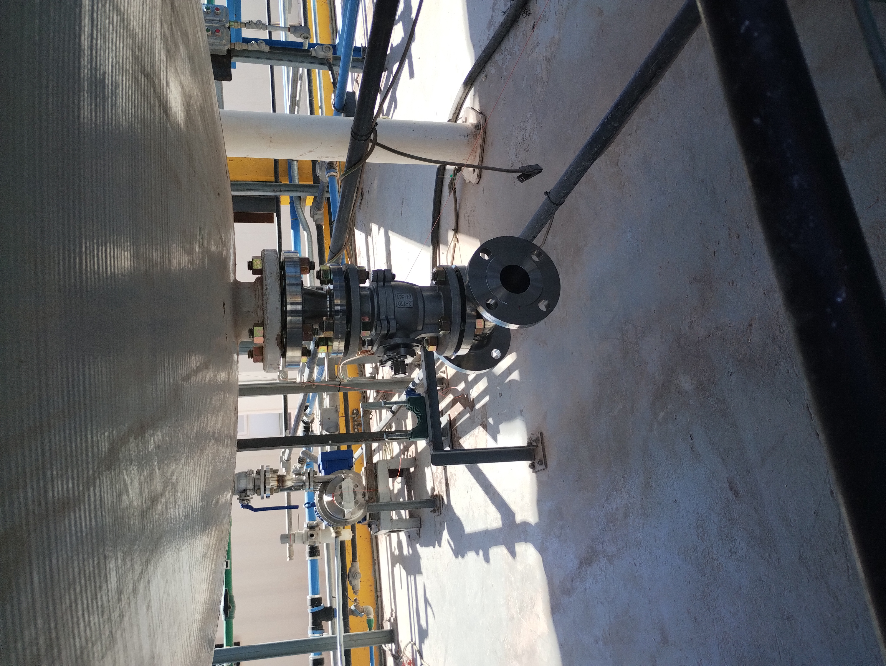

Presencia digital
Creamos páginas profesionales para que empresas, comercios y profesionales puedan mostrar sus servicios y conseguir nuevos clientes.
Software • Desarrollo Web • Automatización • Industria
Desarrollamos páginas web, sistemas de gestión, aplicaciones y soluciones tecnológicas a medida para empresas, comercios, profesionales e industria.
Combinamos programación, tecnología y experiencia técnica para crear herramientas adaptadas a las necesidades reales de cada cliente.
Creamos páginas profesionales para que empresas, comercios y profesionales puedan mostrar sus servicios y conseguir nuevos clientes.
Sistemas y aplicaciones diseñados específicamente según los procesos y necesidades de cada negocio.
Digitalización de controles, pruebas, inspecciones, mantenimiento y adquisición de datos.
Te acompañamos desde la idea inicial hasta la implementación y mejora de la solución.
Desde una página web profesional hasta sistemas personalizados y soluciones para procesos industriales.
Páginas web profesionales para empresas, comercios, profesionales y emprendimientos.
Sistemas de gestión, clientes, órdenes de trabajo, stock, empleados, documentación y reportes.
Aplicaciones para celulares orientadas a gestión, inspecciones, servicios y operación en campo.
Integración de sensores, ESP32, Raspberry Pi, instrumentación y adquisición de datos.
Sistemas para pruebas hidráulicas, testeo de anclas, inspecciones y generación de informes técnicos.
Transformamos planillas y controles manuales en herramientas digitales simples y eficientes.
Diseñamos sitios modernos, rápidos y adaptados a celulares para ayudarte a presentar tus servicios y convertir visitas en consultas.
Mostrá productos, servicios, ubicación, horarios y contacto directo por WhatsApp.
Presentación corporativa, servicios, proyectos realizados y canales de contacto.
Construí una presencia profesional y facilitá que nuevos clientes te encuentren.
Mostrá trabajos realizados, especialidades, servicios y recibí consultas rápidamente.
Contanos a qué se dedica tu negocio y te proponemos una solución adaptada a lo que necesitás.
Algunos ejemplos de soluciones desarrolladas para necesidades reales.
Sistema para talleres mecánicos que reúne los datos del cliente, el vehículo y cada mantenimiento en una sola pantalla de gestión.
Aplicación Android en pruebas para registrar la jornada de trabajo y consultar el historial de entradas y salidas.
 Oil & Gas
Oil & Gas
Sistema para registrar y documentar ensayos de anclas utilizadas en operaciones petroleras.

IndustriaSistema para registrar presión, temperatura y duración durante ensayos hidráulicos de cañerías y equipos.
 Gestión
Gestión
ERP para empresas de servicios que centraliza la documentación de cada trabajo y permite seguirlo desde la orden hasta el cobro.
 Impacto social
Impacto social
Aplicación Android en desarrollo para difundir búsquedas de mascotas perdidas y publicaciones de adopción.
Podemos transformar formularios, controles, inspecciones y registros manuales en una herramienta digital adaptada a tu operación.

WMSI Soluciones nace con el objetivo de desarrollar herramientas tecnológicas prácticas para empresas, profesionales e industria.
Soy Walter Marín, programador y técnico electromecánico. Combino programación con experiencia técnica para crear soluciones pensadas desde la necesidad real del cliente.
¿Necesitás una página web, un sistema, una aplicación o digitalizar algún proceso? Contanos qué necesitás y analizamos una solución.